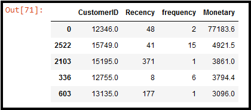

E-Commerce Analysis
In-Progress
Objective: First, provide a comprehensive breakdown of the different customer groups within this E-Commerce company. Second, demonstrate how effective customer segmentation can be used provide valuable insight to product development teams and resource allocation decision-making.
Key Takeaways:
Monetary's Extreme Outlier
When building boxplots for the RFM metrics to identify outliers, we came across an extreme outlier for Monetary.
This outlier here has a monetary score of 77183.6, or alternatively, possesses a Z-score of 65.5.



More takeaways will follow, see current progress in the meantime!
Building the customer segmentation model in Python...
A customer segmentation workflow can often be summarized by 7 key steps (excluding sub-steps):
1. Transform the data as necessary (e.g. aggregate, new fields, etc.) in order to obtain the RFM scores.
2. Obtain the RFM scores and merge them to create one final RFM dataset
3. Clean the RFM dataset, identifying and adressing duplicates, null values, outliers, etc.
4. Standarize the dataset (we'll use StandardScaler from SKLearn)
5. Determine the optimal number of clustering groups (we'll use Elbow Method)
6. Visualize the clusters in the manner most suitable for interpretation
7. Interpret and contexualize the resulting model in terms of business operation & strategy
- © Creative Commons
- Design: HTML5 UP